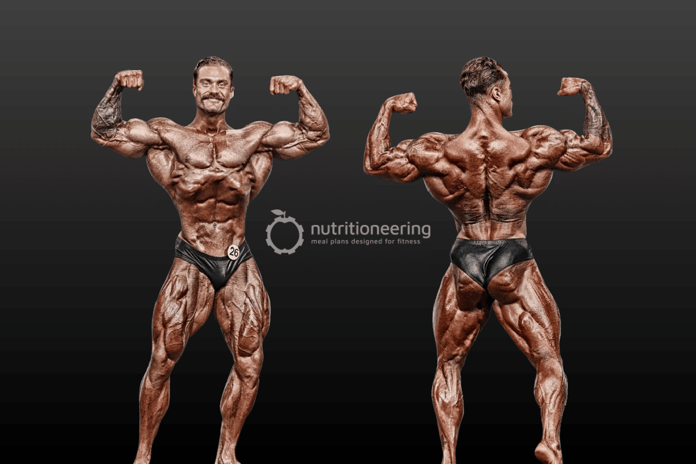

Culturistas destacados en la Actulidad
Nick Walker
Logros destacados
- Primer lugar en el Chicago Pro en 2020
- Victoria en el New York Pro
- Destacada actuacion en el Mr. Olympia
Fisico y estilo de entrenamiento
El fisico de Nick Walker se caracteriza por su tamaño masivo, musculos bien definidos y una increible simetria. Su enfoque en el entrenamiento se centra en el desarrollo muscular y la busqueda de la perfección en cada detalle.
Dedicacion y actitud
Walker es conocido por su dedicacion implacable al deporte y su actitud humilde. Su pasion por el culturismo y su constante busqueda de la excelencia lo convierten en una figura admirada en la comunidad del culturismo.
Futuro prometedor
Aunque aun sea encuentra en las primeras etapas de su carrera profesional, Nick Walker ha demostrado un tremendo potencial y ha dejado una impresion duradera en el mundo del culturismo. Se espera que continue evolucionando y logrando grandes cosas en el futuro.

Cris Bumstead
Cbum, cuyo nombre real es Chris Bumstead, es un destacado culturista profesional de Canadá. Nacido el [fecha de nacimiento], se ha ganado un lugar destacado en la comunidad del culturismo por su físico impresionante y su estilo de entrenamiento inspirador.
Logros destacados
- Ganador del Mr. Olympia Classic Physique en [año]
- Varios títulos regionales y nacionales en su carrera amateur
- Reconocimiento mundial por su estética y simetría muscular
Estilo de entrenamiento y físico
El estilo de entrenamiento de Cbum se enfoca en desarrollar una estética clásica y una simetría muscular excepcional. Su físico se caracteriza por una musculatura densa y bien proporcionada, con énfasis en la espalda, los hombros y los brazos.
Inspiración y actitud
Cbum es conocido por su actitud positiva y su capacidad para inspirar a otros en el mundo del culturismo. Su dedicación y su ética de trabajo han sido fundamentales para su éxito, y continúa motivando a otros a través de su presencia en las redes sociales y su enfoque en la superación personal.
Futuro prometedor
Cbum ha dejado una marca significativa en el mundo del culturismo y se espera que continúe evolucionando y alcanzando grandes logros en su carrera profesional. Su físico excepcional y su enfoque en la estética clásica lo convierten en una figura destacada en el deporte, y su legado seguramente perdurará en la comunidad del culturismo.

Andrew Jacket
Andrew Jacket es un reconocido fisicoculturista con una trayectoria impresionante en el mundo del culturismo. Su dedicación, disciplina y pasión por el deporte lo han llevado a convertirse en una figura destacada en la comunidad del culturismo.
Logros destacados
- Ganador del Mr. Universo en varias ocasiones
- Campeón de varios títulos nacionales e internacionales
- Destacada presencia en competencias de alto nivel
Físico imponente y estilo de entrenamiento
El físico de Andrew Jacket es impresionante, con músculos bien definidos y una increíble masa muscular. Su enfoque en el entrenamiento se basa en la fuerza, la resistencia y la hipertrofia, combinando diferentes métodos y técnicas para lograr un desarrollo muscular óptimo.
Dedicación y mentalidad
Andrew Jacket es conocido por su dedicación inquebrantable y su mentalidad centrada en la excelencia. Su compromiso con el entrenamiento, la nutrición adecuada y el descanso le han permitido alcanzar su máximo potencial y superar los desafíos que se le presentan.
Inspiración y legado
Andrew Jacket es una fuente de inspiración para muchos aspirantes a fisicoculturistas. Su perseverancia, ética de trabajo y logros en el deporte han dejado un legado duradero en la comunidad del culturismo, motivando a otros a seguir sus pasos y perseguir sus propios sueños en el mundo del fisicoculturismo.
Futuro prometedor
Con una carrera llena de éxitos y una presencia dominante en el escenario,
el futuro de Andrew Jacket en el fisicoculturismo se presenta prometedor.
Continuará desafiándose a sí mismo, estableciendo nuevos estándares y dejando
una marca indeleble en el deporte.
Ramon Dino
Ramón Dino es un reconocido fisicoculturista ficticio con una presencia imponente en
el mundo del culturismo. Su dedicación, tenacidad y pasión por el deporte lo
han llevado a convertirse en una figura destacada en
la comunidad del fisicoculturismo.
Logros destacados
- Ganador del Arnold Classic en varias ocasiones
- Campeón de numerosos títulos nacionales e internacionales
- Presencia dominante en competencias de alto nivel
Físico masivo y estilo de entrenamiento
El físico de Ramón Dino es imponente, con una increíble masa
muscular y una definición excepcional. Su enfoque en el entrenamiento se
basa en la intensidad, la fuerza y la construcción de músculo magro, combinando
técnicas avanzadas para lograr un desarrollo muscular óptimo.
Dedicación y mentalidad
Ramón Dino es conocido por su dedicación inquebrantable y su mentalidad
enfocada en el éxito. Su compromiso con el entrenamiento riguroso, la nutrición
adecuada y el descanso le han permitido alcanzar niveles extraordinarios de rendimiento
físico y superar constantemente sus límites.
Inspiración y legado
Ramón Dino es una fuente de inspiración para muchos fisicoculturistas y entusiastas
del fitness. Su determinación, disciplina y logros en el deporte han dejado un legado
duradero, motivando a otros a perseguir la excelencia y alcanzar sus metas en el mundo
del fisicoculturismo.
Futuro prometedor
Con una trayectoria llena de éxitos y una presencia imponente en el escenario,
el futuro de Ramón Dino en el fisicoculturismo es prometedor. Continuará desafiándose
a sí mismo, estableciendo nuevos estándares y dejando una huella imborrable en el deporte.